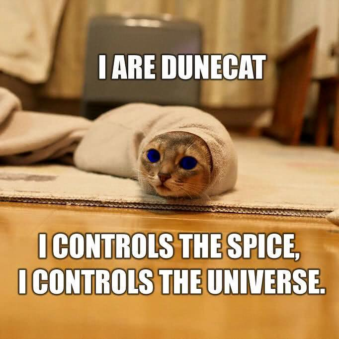
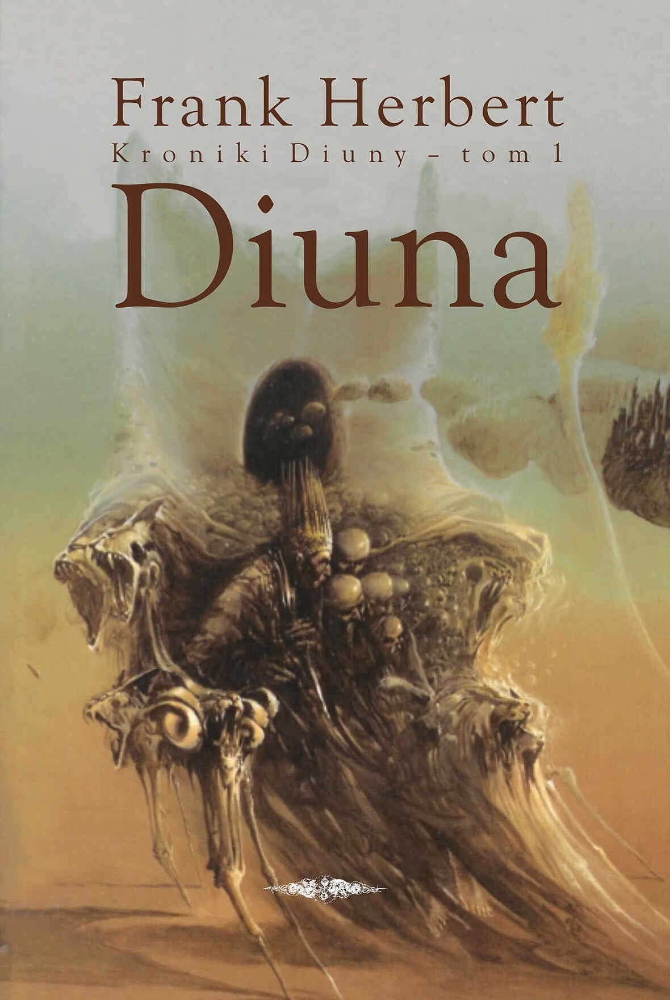
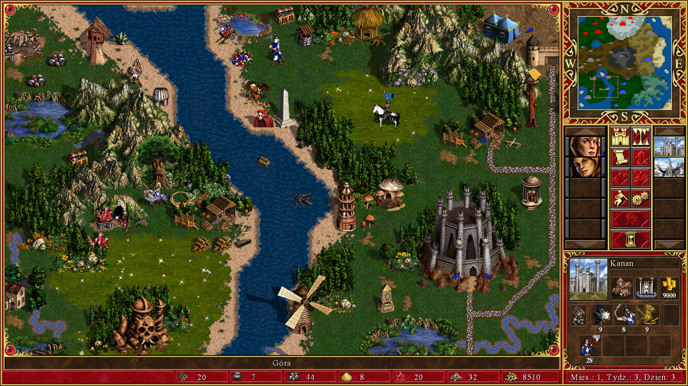
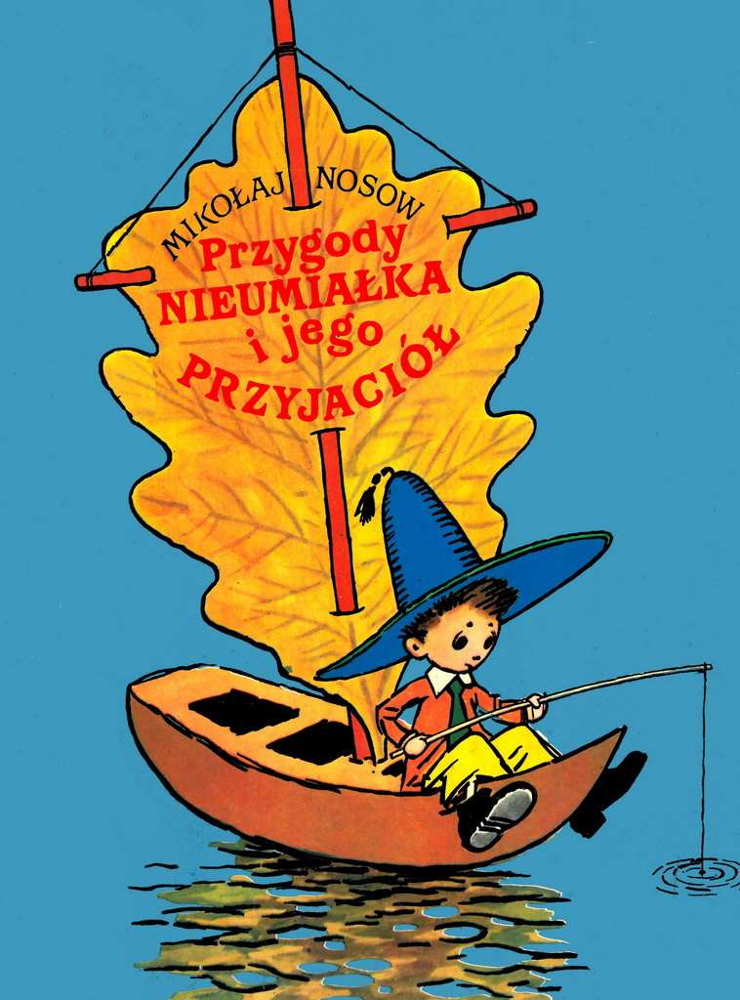
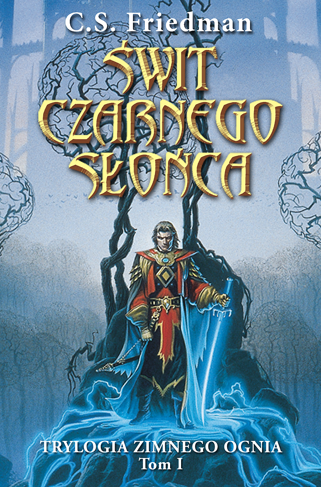

Próbować zrozumieć Muad’Diba bez zrozumienia jego śmiertelnych wrogów Harkonnenów to próbować zobaczyć Prawdę, nie znając Kłamstwa. Jest to próba ujrzenia Światła bez poznania Ciemności. To niemożliwe. 
Tu pojedziemy cytatem z Dune Franka Herberta
Moje Top 10 gier

- Heroes of Might and Magic III
- Robbo
- Uncharted 4
- Cannon Fodder
- Quake
- Misja
- Alan Wake
- Limbo
- Left for Dead 2
- Archon
Kto zgadnie, z jakiej pozycji jest to cytat?
Gucio obraził się i poszedł do domu, a Nieumiałek rzeczywiście nie położył się wieczorem spać. Kiedy wszyscy już posnęli, wziął farby i zaczął po kolei malować swych towarzyszy. Z Pączka zrobił takiego tłuściocha, że aż nie zmieścił się na portrecie. Pośpieszka namalował z cieniusieńkimi nóżkami, a z tyłu, nie wiadomo po co, dorobił mu psi ogon. Myśliwego Kulkę przedstawił jadącego wierzchem na piesku Bulce. Doktorowi Pigulskiemu zamiast nosa namalował termometr, a Umiałkowi z niewiadomych powodów namalował ośle uszy. Jednym słowem, wszystkich ośmieszył i wydrwił. Nad ranem rozwiesił portrety na ścianach i pod każdym umieścił podpis, tak że zrobiła się cała wystawa.
Świt Czarnego Słońca Celia Friedman
Noc. Głęboka noc panowała na dole, nie zważając na to, co działo się na niebie. Nawet promienie Dominy nie zdołały przebić grubej warstwy roślinności, której przeznaczeniem było zatrzymywanie światła. Grube, białoskóre pnącza lśniły w blasku lampy, gdy je mijali, wznosząc bezlistne łodygi po pniach drzew, by dotarty wyżej, gdzie dochodziło światło. Dłuższa wizyta w zamkowej bibliotece pozwoliła odkryć, że Puszcza była niegdyś zwyczajnym lasem, którego jedyną szczególną cechą było umiejscowienie fae ziemi w pobliżu naturalnego skupiska. Łowca to zmienił. Wyhodował specjalny gatunek drzew, które zatrzymywały zeschnięte liście w pajęczynie cienkich gałązek, tak że nawet w środku zimy światło nie dochodziło do podłoża. Jakich jednak innych modyfikacji musiał dokonać, aby zapewnić funkcjonowanie tego ekosystemu? Nieustanny mrok zabiłby wszystkie światłolubne gatunki w Puszczy, burząc równowagę całego ekosystemu. Łowca musiał posłużyć się Sztuką, zmieniając roślinę po roślinie, a także zwierzęta, owady i zarośla, aż powstała nowa równowaga tysięcy żyjących w ciemnościach gatunków. I stworzył kilka innych, aby umożliwić jej funkcjonowanie. Damien pomyślał o podziemnych robakach i zrozumiał, że nawet one musiały spełniać pożyteczną rolę. W biosferze o tak niewielkim dopływie energii nie było mowy o marnotrawstwie.